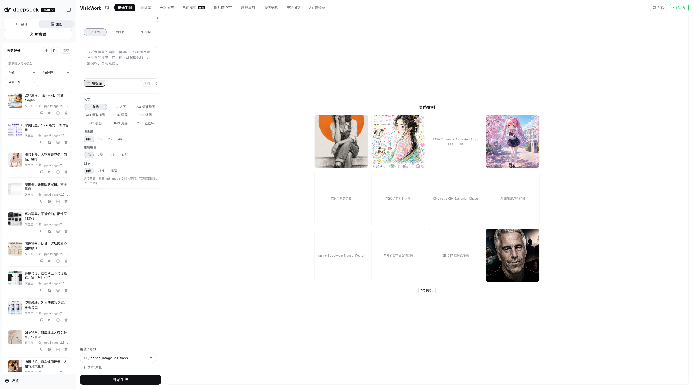
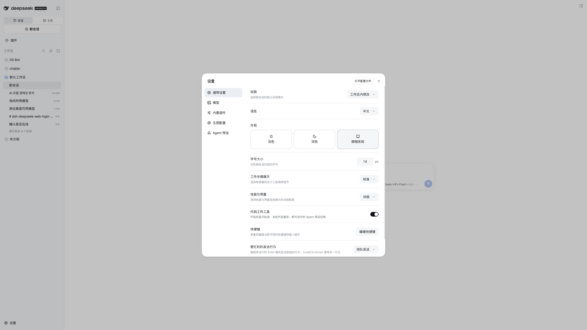
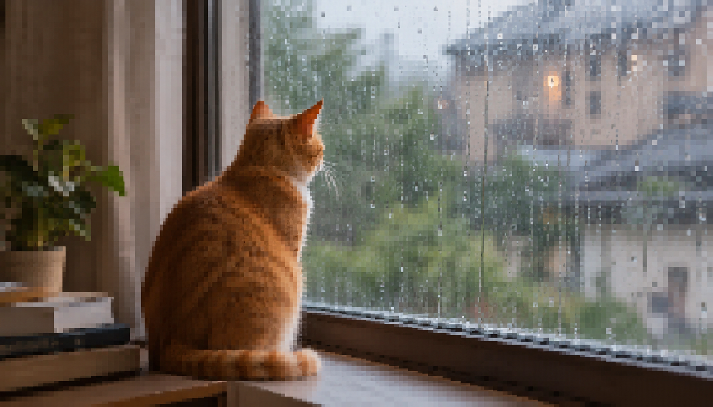
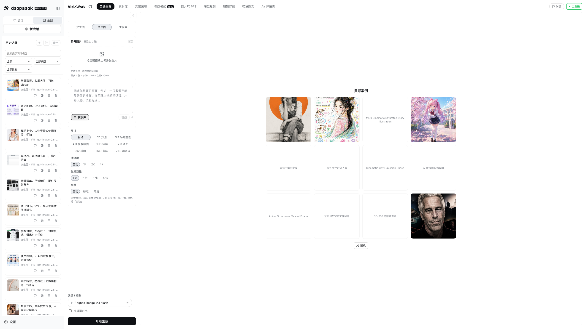
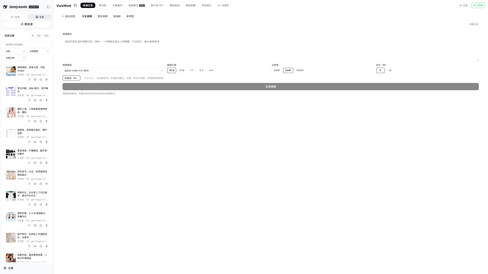
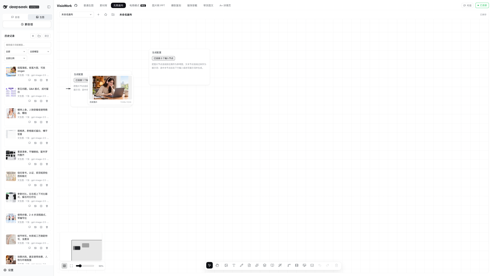
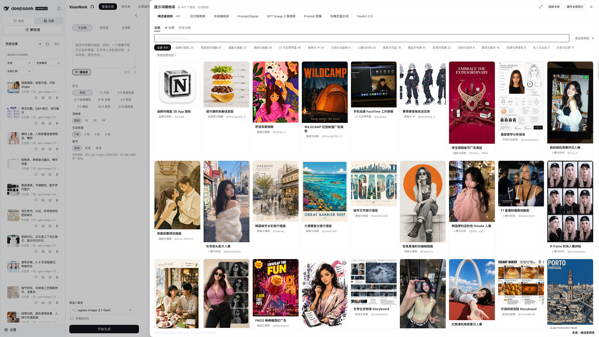

一条命令装上，重启 dsh web，侧边栏就多出「会话 / 生图」两个页签。

设置 → 生图配置：填 API 地址与密钥，点「检测模型」勾选，保存。

尺寸、清晰度、张数按需调；不满意就改提示词重来，历史都在。

风格、人物、构图分开给；拖拽、粘贴、批量选择都行。

文生视频 / 图生视频 / 首尾帧 / 参考图，异步渲染，关掉页面也在跑。

图片、视频、文本、配置节点连线；改哪步只重跑哪步。

分镜一镜一段；框选几段按画布位置拼；要剪再接就开时间线。
商品参考图生成主图、卖点图、场景图；模板库里挑现成提示词。
